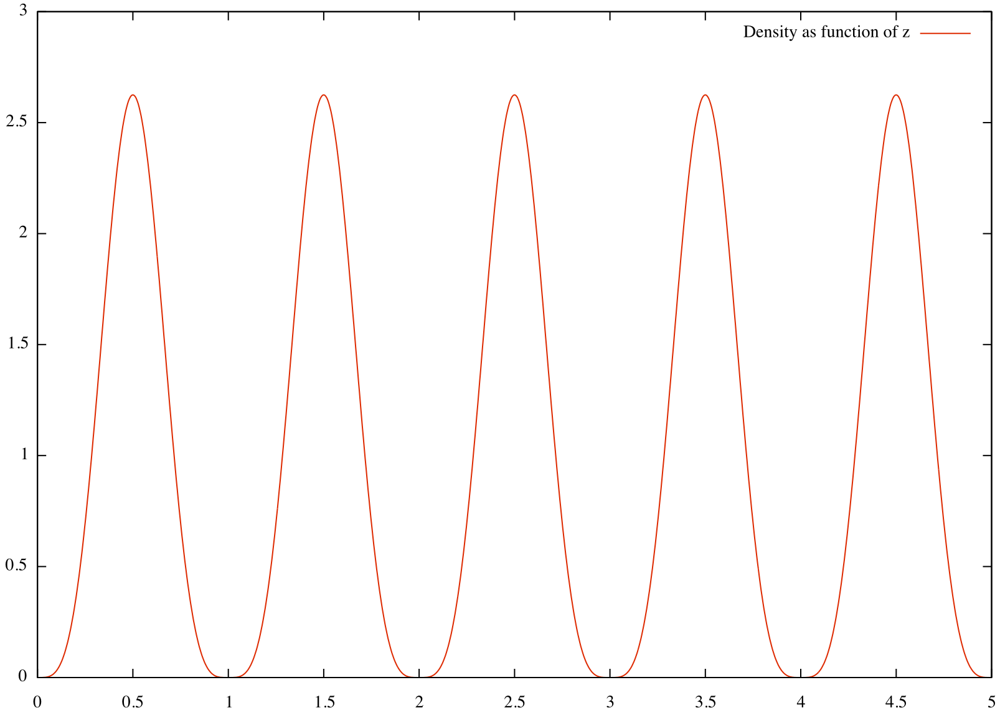

This feature is still in development, so the documentation is meant for developers only. However, anyone is welcome to give it a try.
MercuryCG is a new implementation of the coarse graining toolbox fstatistics, and will replace this toolbox in the near future.
MercuryCG is a postprocessing tool: it takes an existing data set, consisting of a restart and one or more data and fstat files, and applies the coarse-graining formulation to it. The output is stored in a stat file, which can then be read by gnuplot or Matlab (via the readMercuryCG.m file in Drivers/MercuryCG/) to be visualised.
This document details how to use MercuryCG as a post-processing tool. Note, coarse graining can also be applied during a MercuryDPM simulation, analysing the data while the simulation is still running; to do this, see the CGHandler documentation.
Basic syntax
First, we provide the basic syntax, then show some examples. Finally, more complex operations are introduced.
Assume you want to analyse the output files of the Driver's code NewtonsCradleSelfTest, located in the folder Drivers/MercuryCG. To create the file, run the simulation using make SquarePackingSelfTest && ./SquarePackingSelfTest in said folder). The simulation produces two output files that MercuryCG needs: SquarePackingSelfTest.data and SquarePackingSelfTest.fstat. To analyse this data,
- change to the folder
Drivers/MercuryCG/ in the build directory,
- compile MercuryCG
- run the following command
./MercuryCG SquarePackingSelfTest
Note: If the data is in another folder than Drivers/MercuryCG/, you have to prepend the file path to the file name. For example, to analyse the output files of LeesEdwardsSelfTest in the folder MercurySimple demos, use the command
[Lees:headers]
Definition: LeesEdwardsSelfTest.cpp:13
With the above arguments, MercuryCG outputs spatially-averaged continuum fields for each time step in the data/fstat files into a file named 'SquarePackingSelfTest.stat`. For a quick check of the output, the spatially-averaged results from the last written timestep are outputted to the screen
Spatial averages: VolumeFraction 0.785398 Density 1 Momentum 0 -5.6968e-07 0 ...
Note that MercuryCG returns the momentum instead of the velocity, as momentum has a primary definition as a coarse-grained variable ( \(\vec{j}=\sum_i m_i\vec{v}_i\phi_i\)), while velocity is computed by dividing two "primary" coarse-grained fields (momentum and density, \(\vec{V}=\vec{j}/\rho\)). Generally, MercuryCG only outputs primary coarse-grained variables, as they are well-defined even if no particles are present. The primary fields are also the most relevant for any macroscopic theory based on conservation principles, as they have well-defined averaging properties (they can be thought of as the density of a microscopic quantity). Secondary fields like velocity can be constructed by combining the primary fields. The script readMercuryCG.m reads the primary variables into Matlab and constructs several secondary variables (velocity, kinetic stress, temperature, etc).
Output format
The output file consists of a two-line header followed by several lines of data. For the example above, the output is:
CG<O> n 1 1 1
min 0 0 -0.5
max 5 5 0.5 width 1 Lucy cutoff 1
time 2:VolumeFraction 3:Density 4-6:Momentum ...
0 0.785398 1 0 0 ...
0.4 0.785398 1 0 6.72166e-05 ...
0.6 0.785398 1 0 -1.53499e-05 ...
0.8 0.785398 1 0 3.09892e-06 ...
1 0.785398 1 0 -5.83261e-07 ...
const unsigned n
Definition: CG3DPackingUnitTest.cpp:11
Evaluates time-resolved continuum fields and writes the data into a stat file.
Definition: CG.h:55
#define min(a, b)
Definition: datatypes.h:22
#define max(a, b)
Definition: datatypes.h:23
The first line outputs a few properties you need to interpret the remaining file output:
CG: the standard CG class was used, which evaluates each time step separately (see also TimeAveragedCG and TimeSmoothedCG)- ' < O >': the coordinate type O was used, which returns spatial averages (see also X, XY, XYZ, etc) The first line details the different fields that are computed by fstatistics, e.g. volume fraction
Nu, bulk density Density and the three momentum components MomentumX MomentumY MomentumZ.
min 0 0 -0.5 max 5 5 0.5: the spatial domainn 1 1 1: a 1x1x1 mesh of values was used, which is the only option for spatially averaged statistics.width 1: the coarse-graining widthLucy: the type of coarse-graining function (see Gaussian, Lucy, Linear and Heaviside)cutoff 1: the coarse-graining width
The second line specifies the time/space coordinates and fields computed by MercuryCG and the respective columns.
The remaining lines contains the coordinates and the values of the continuum fields at these coordinates.
Advanced options
MercuryCG can do much more than return global averages of the continuum fields. In particular, it can extract local continuum fields at specific spatial coordinates. The behavior of MercuryCG is controlled via command line arguments; the most commonly used options are discussed in more detail below.
Temporal averaging
The output file can be modified by adding additional arguments to the command line. E.g. you can use the -timeaverage command:
Definition: SquarePackingSelfTest.cpp:14
This tells MercuryCG to time-average. The output file now looks like this:
time 2:VolumeFraction 3:Density 4-6:Momentum ...
1 0.785398 1 0 -2.3681e-05 ...
Evaluates time-averaged continuum fields and writes the data into a stat file.
Definition: TimeAveragedCG.h:39
Spatially-resolved fields
The coarse-graining formulations can extract local continuum fields, whose value depends on the spatial coordinate. You can extract spatially resolved fields using the arguments -coordinates XYZ -n 2 -timeaverage. This creates a 2x2x2 grid of values over the domain and evaluates the continuum fields at each of those points. Note, the grid is not part of the cg formulation itself: CG returns field values at all points in space; but numerically we can only evaluate the continuum fields at a final number of points. The output file now contains 8 lines of data, one for each z-value:
time
x y z 5:VolumeFraction 6:Density 7-9:Momentum ...
1 1.25 1.25 -0.25 0.744721 0.948208 0 -1.71359e-05 ...
1 1.25 1.25 0.25 0.744721 0.948208 0 -1.71359e-05 ...
1 1.25 3.75 -0.25 0.744362 0.947751 0 -2.94495e-05 ...
1 1.25 3.75 0.25 0.744362 0.947751 0 -2.94495e-05 ...
1 3.75 1.25 -0.25 0.744721 0.948208 0 -1.71359e-05 ...
1 3.75 1.25 0.25 0.744721 0.948208 0 -1.71359e-05 ...
1 3.75 3.75 -0.25 0.744362 0.947751 0 -2.94495e-0 ...
1 3.75 3.75 0.25 0.744362 0.947751 0 -2.94495e-05 ...
...
Scalar * y
Definition: level1_cplx_impl.h:128
list x
Definition: plotDoE.py:28
You can also choose to spatially resolve only specific spatial coordinates and average over the remaining ones. Use the arguments '-coordinates [O,X,Y,Z,XY,XZ,YZ,XYZ]' to modify this behaviour.
By default, the code uses the coarse-graining width 1, and a Lucy coarse-graining function. Use the arguments -function [Gaussian,Lucy,Linear,Heaviside] and -w [double] to change these defaults. For an explanation of what a kernel function is, please see the section on the maths of coarse-graining.
Visualisation
The following command produces z-resolved data using a Lucy kernel with a narrow cutoff radius of 0.5 (one particle radius).
RowVector3d w
Definition: Matrix_resize_int.cpp:3
#define Z
Definition: icosphere.cpp:21
We can now visualise this data using e.g. gnuplot:
gnuplot>
p 'SquarePackingSelfTest.stat' u 2:4
w l
gnuplot>
p 'SquarePackingSelfTest.stat' u 2:4
w l
gnuplot>
p 'SquarePackingSelfTest.stat' u 2:4
w l
float * p
Definition: Tutorial_Map_using.cpp:9
void gnuplot(std::string command)
Plots to a gnuplot window.
Definition: MiscHelpers.cc:17
The result is a density field with peaks at the particle centre and vanishing at a distance of 0.5 from the particle centre:  Alternatively, you can visualise the data in Matlab:
$
data = readMercuryCG(
'SquarePackingSelfTest.stat')
int data[]
Definition: Map_placement_new.cpp:1
void plot()
Plot.
Definition: sphere_scattering.cc:180
Command line manual
You can obtain a full list of command line options by typing the -help command:
DESCRIPTION
MercuryCG is the postprocessing tool
for extracting coarse-grained fields from particle
data.
SYNTAX
You need to specify the base
name of the MercuryDPM
output files (
data/fstat or
restart files) that should be analysed.
Additional arguments can be specified as [-option
value] pairs:
EXAMPLES OF USE
1) To extract spatially-averaged continuum fields (
i.e. the fields are functions of
t only) from
the
output files
name.*, use the following command:
./MercuryCG
name -coordinates
O
2) To extract fully-resolved continuum fields (
i.e. the fields are functions of
x,
y, z and
t) from the
output files
name.* on
a 10x10x10 spatial grid, use the following command
OPTIONS
Outputs
a usage message and exits
Determines which spatial dimensions should be resolved.
Determines the cg function.
Possible values are Gauss, Heaviside, Linear, Lucy, default is Lucy.
Determines which fields should be extracted.
Possible values are StandardFields, LiquidMigrationFields, GradVelocityFields, default is StandardFields.
-timeaverage
If
this option is specified, the
data will be time-averaged.
-timesmooth
If
this option is specified, the
data will be coarse-grained in time.
Creates
a spatial grid of
n elements in each resolved dimension.
Equivalent to '-nx value -ny value -nz value'.
Specifies the amount of elements in each spatial direction.
Will be ignored if the spatial direction is not resolved.
Coarse-grained fields will be evaluated at the midpoints of each element.
By
default, the
domain is equal to the spatial
domain of the
DPM, as specified in the
restart file (or
data file
if no restart file is given). However, the
domain of the grid can be specified by the -
x, -
y, -z options.
For example,
for '-x 0 10 -nx 5', the cg fields will be evaluated at
x=1,3,5,7,9.
Allows you to specify the element
size in stead of the number of elements of the spatial grid.
Equivalent to '-hx value -hy value -hz value'.
Allows you to specify the element
size in stead of the number of elements of the spatial grid.
Equivalent to -
nx ceil((maxX-minX)/
value), where [minX,maxX] is the
domain of the spatial grid.
Creates
a spatial grid of
n elements in each resolved dimension.
Equivalent to '-nx value -ny value -nz value'.
-
x value1 value2, -
y value1 value2, -z value1 value2
Specifies the
domain of the spatial grid on which the coarse-grained fields will be evaluated.
For example,
for '-x 0 10 -nx 5', the cg fields will be evaluated at
x=1,3,5,7,9.
Specifies the minimum and maximum time values on which the cg fields will be evaluated.
Specifies the
name of the
output file in which the cg fields are written.
By
default, the
output file will be named
'name.stat'.
int i
Definition: BiCGSTAB_step_by_step.cpp:9
@ XY
Definition: StatisticsVector.h:21
@ XZ
Definition: StatisticsVector.h:21
@ YZ
Definition: StatisticsVector.h:21
@ XYZ
Definition: StatisticsVector.h:21
@ O
Definition: StatisticsVector.h:21
Scalar Scalar int size
Definition: benchVecAdd.cpp:17
In this file a cubic packing of 5^3 particles in a tri-axial box is created and allowed to settle und...
Definition: HGridUpdateUnitTest.cpp:9
Definition: restart2.cpp:8
#define X
Definition: icosphere.cpp:20
const Scalar * a
Definition: level2_cplx_impl.h:32
EIGEN_STRONG_INLINE EIGEN_DEVICE_FUNC bfloat16 ceil(const bfloat16 &a)
Definition: BFloat16.h:644
squared absolute value
Definition: GlobalFunctions.h:87
const unsigned nz
Definition: ConstraintElementsUnitTest.cpp:32
const unsigned nx
Definition: ConstraintElementsUnitTest.cpp:30
const unsigned ny
Definition: ConstraintElementsUnitTest.cpp:31
help
Definition: compute_granudrum_aor.py:141
string usage
Definition: fpsmall.py:6
string name
Definition: plotDoE.py:33
t
Definition: plotPSD.py:36
int no
Definition: plotPSD.py:33
void output(std::ostream &outfile, const unsigned &nplot)
Overload output function.
Definition: overloaded_element_body.h:490
SteadyAxisymAdvectionDiffusion problem on rectangular domain
Definition: steady_axisym_advection_diffusion.cc:151
const char Y
Definition: test/EulerAngles.cpp:32
Full-scale Images